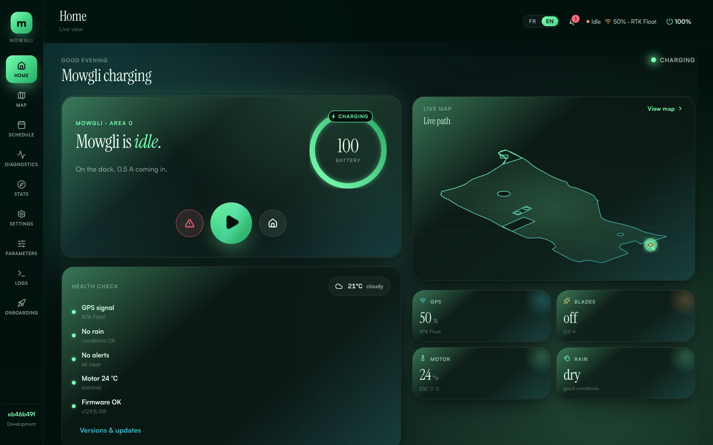
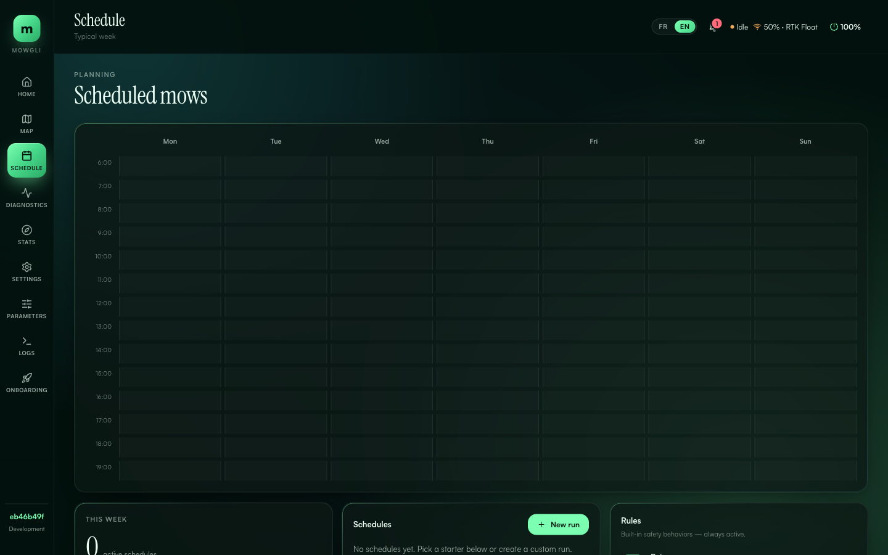
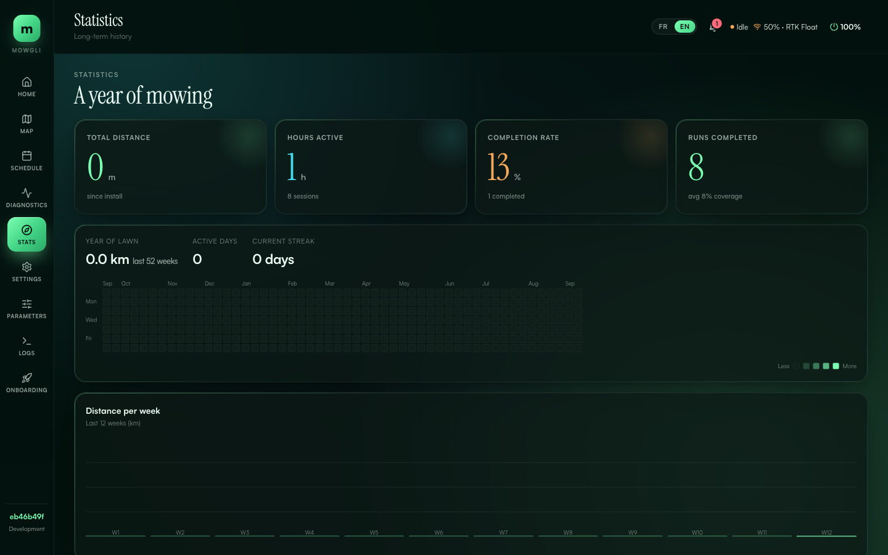

Your mower, but smarter. Open-source autonomous navigation built on ROS2 — so your robot mower actually knows where it is, where it's going, and what's in the way.
Release v1.4.0 · September 2026
Checks for its own updates, tells your phone what it is doing, talks to Home Assistant, and is reachable from anywhere — privately.
Settings → Updates checks for new releases every day and shows them in the notification bell. One reviewed click installs the whole stack — robot software, GUI and sensor drivers together — with a backup, a health check and automatic rollback, and only while the mower is idle with the blade off. Pin a version, follow Production or Development, or roll back.
A real MQTT bridge, configured from the GUI: retained mowing status, battery and coverage, live GPS position, online/offline availability and a command topic. Works with the bundled broker or the one you already run. The topic contract is documented for any integration to build on.
Telegram, Pushover, ntfy or a JSON webhook. Know when the mower starts, finishes a zone, gets home, gets stuck, hits the emergency stop, waits for rain or GPS, or runs low on battery — in English or French, with a test button to prove the channel.
An optional, hardened Tailscale sidecar puts the web interface on your private tailnet with HTTPS — reachable from your phone anywhere, without opening a router port. Never public: no Funnel, no exposed login, userspace networking with every capability dropped.
Alternate the stripe angle by 90° every session, per area, so the lawn is not always cut in the same direction. See and override the next direction for each zone without interrupting a run.
Every image rebuilt on ROS 2 Lyrical and Ubuntu 26.04 with pinned source dependencies, plus a Cyclone DDS discovery fix, wheel gains that actually turn the inner wheel on tight arcs, and dock calibration that works on real receivers. The host OS does not change.
Rerun the installer once to enable in-GUI updates, then open Settings → Updates. That replaces mowgli-pull && mowgli-up for good.
curl -sSL https://mowgli.garden/install.sh | bash
Check docker volume ls | grep mowgli_maps first — if your map volume is not prefixed install_, set COMPOSE_PROJECT_NAME in docker/.env so the stack keeps its data. Full steps in the release notes.
LiDAR scans the surroundings 10x/second. Required for obstacle avoidance, and optionally builds a map that anchors the position when RTK drops out. RTK-GPS pinpoints position to centimeter accuracy.
A behavior tree decides what to do: mow, dock, avoid obstacles, wait for rain to stop. Nav2 plans optimal paths. No random bouncing.
Fields2Cover plans headland rings and parallel swaths for every area, joined into one continuous path. The robot follows it with sub-centimeter accuracy, tracking progress and replanning around obstacles in real time.
Everything the stack does today — the foundations, and what each release added on top.
No SLAM needed. A single GTSAM iSAM2 factor-graph localizer (fusion_graph) fuses RTK-GPS + IMU + wheel odometry under REP-105, holding a centimetre-accurate map pose. When RTK drops out, an optional LiDAR map anchor localises the robot against the map it built under RTK, so the estimate rides through the outage.
One iSAM2 factor graph owns both the odometry and map frames. RTK-GPS, IMU heading, wheel odometry, and optional LiDAR all enter as factors — with a tight non-holonomic constraint on the wheel input for smooth, drift-resistant tracking, and a wrong-fix gate that rejects RTK jumps the wheels cannot explain.
Reactive, composable control logic using BehaviorTree.CPP v4. Emergency guards, docking, coverage, rain and battery pauses, resume after a restart — all orchestrated by a single tree you can watch live in the GUI.
Real-time collision monitor with polygon stop/slow zones. With LiDAR the coverage controller deviates laterally around obstacles instead of stopping; repeatedly seen obstacles become keepout proposals you accept or reject on the map.
Spinning wheels with no GNSS motion means a dig, not progress. The bridge hard-stops on the wire, reverses out, stamps a keepout so the plan routes around the hole, and stops the mission if the same spot traps the robot three times.
Record multiple mowing areas from your phone, with obstacles and navigation-only corridors. The robot mows them all sequentially on continuous headland-plus-stripe paths (Fields2Cover v3), tracks progress per cell, and resumes exactly where it stopped.
Alternate the stripe angle by 90° every session, per area, so the lawn is not always cut the same way. See and override the next direction for each zone without interrupting a run.
Nav2 docking to the charger with one-click dock calibration from the GUI, undock via a safe back-up behaviour, critical-battery return with automatic resume once charged, and a manual "resume now" once the battery is above the floor.
Weekly schedule grid, rain behaviour (ignore, dock, dock until dry, pause), and an optional IrriSense soil-moisture gate that skips a scheduled mow while the garden is still wet.
Settings → Updates checks for releases daily and installs the one you review — the whole stack together, with backup, verification and rollback, only while the mower is idle with the blade off.
Retained mowing status, battery and coverage, live GPS position, online/offline availability and a command topic, on the bundled broker or yours. A documented topic contract for any integration.
Telegram, Pushover, ntfy or a webhook tell you when the mower starts, finishes a zone, gets home, gets stuck, hits the emergency stop, waits for rain or GPS, or runs low on battery.
An optional, hardened Tailscale sidecar puts the web interface on your private tailnet with HTTPS. Reachable from anywhere, never public.
State-adaptive dashboard with hero card, live sparkline telemetry, radial gauges and health checks. Full Mapbox map editor, live ROS2 parameter tuning, logs, diagnostics, and firmware flashing from the browser. Dark & light themes, responsive mobile layout, English and French. React + Go + WebSocket.
Automatic session recording with aggregate stats: area covered, time spent, blade hours, battery cycles. Review mowing history anytime, and record a ROS bag of a session for analysis.
An optional WS2812 ring shows the robot's state from across the garden — mowing, docking, charging, error — and dims to a configurable "still charged" glow once the battery is full.
Works with your stock YardForce board — no need to replace electronics. Add an RTK receiver (u-blox F9P, Unicore UM98x or any NMEA source), a LiDAR (LD19, STL27L, RPLIDAR A1) and an SBC, and import your existing OpenMower map.
The STM32 firmware is the sole blade-safety authority: emergency stop, tilt, lift and stop-button latches, a wheel anti-dig gate and both motor loops run on the board. ROS2 can ask; the firmware decides.
One-command deployment with Docker Compose on Raspberry Pi 4/5, RK3566/RK3588 or any arm64/amd64 Linux box. Cyclone DDS for reliable inter-container communication on ARM boards. Every image on ROS 2 Lyrical.
A Webots world with the mower model runs the full stack on your laptop — record areas, plan coverage, dock — and the CI builds and tests every package on every pull request.
GPLv3 licensed. ROS2 stack, firmware, GUI, Docker configs — everything in one monorepo. Fork it, modify it, contribute back.
State-adaptive hero card, live sparkline telemetry, and contextual actions — from any device.



Pick your hardware, copy the command, paste it on your mower's board. Done.
The step-by-step build manual takes a stock YardForce 500 / 500B through parts, wiring, the compute board, IMU, RTK GNSS, LiDAR, firmware flashing, the installer and the first mow — one step at a time, in English or French, with steps filtered to your hardware. Then come back here to compose your install command.
Open the build manual`mowgli` stays the stable default. `mavros` is an advanced Pixhawk path and disables the direct GNSS/GPS container selection below.
Universal GNSS is the only supported direct GNSS stack. Pick first-boot defaults for the receiver family and serial connection here; the active runtime GNSS config later lives in the GUI/YAML, and the installer will still ask for the exact device path and detect the receiver baud.
Required for obstacle avoidance and the optional LiDAR map anchor
`main` is the stable channel. `dev` tracks the dev branch and pulls `:dev` container images — pick this if you want to iterate alongside upstream development.
SSH into your Raspberry Pi and paste this command:
The installer will still ask for mower-specific settings (GPS datum, NTRIP, dock position) interactively.
Pick your sensors above. The composer generates a one-line install command tailored to your hardware.
SSH into your mower's Raspberry Pi and paste the command. It installs Docker, drivers, and the full ROS2 stack.
Once running, open the web interface to define mowing areas, monitor the robot, and fine-tune settings.
http://<mower-ip>:4006
Settings → Updates checks for new releases every day and installs the one you review, with backup and rollback. No shell needed after the first install.
MowgliNext exists because of OpenMower. They proved that robot mowers can be truly intelligent — not just bouncing randomly or following a buried wire, but actually knowing where they are and planning where to go. That inspiration sparked everything you see here.
We're not trying to replace OpenMower — we're taking a different path. OpenMower replaces the stock electronics with custom boards designed for the job. Mowgli works with your existing hardware, adding capabilities on top. As our ambitions grew, we needed a fresh ROS2 foundation to keep evolving — and by going our own way, we give OpenMower more freedom to iterate too.
Different paths, same goal: smarter mowers for everyone.
Thank you, OpenMower team.
For the original Mowgli reverse engineering work — cracking open the YardForce hardware and showing us what's inside. None of this would exist without that first step.
For the countless late nights spent together getting things to actually work. Debugging hardware at 2am is better with a friend.
For leading the MowgliNext stack — the factor-graph localizer, Nav2 navigation, coverage, behavior trees, and the web GUI. The engine room of the project.
For the Universal GNSS & Unicore integration and relentless field testing — chasing down GPS and coverage bugs on real hardware, in real gardens.
For steady testing, feedback, and bug reports that keep the rough edges honest and push the project forward release after release.
For proving that robot mowers can be truly intelligent. You showed us what's possible and inspired an entire community of builders.
For all your efforts — testing, feedback, bug reports, encouragement. You kept us going when things got hard.
Every person who installed our firmware, filed a bug, asked a question, or just said "it works!" — you give us the courage to keep spending nights on this project.
…and everyone else who has contributed code, issues, and ideas — see all contributors on GitHub.
MowgliNext is built by the community. Join us — report bugs, suggest features, or contribute code. Every contribution makes autonomous mowing better for everyone.